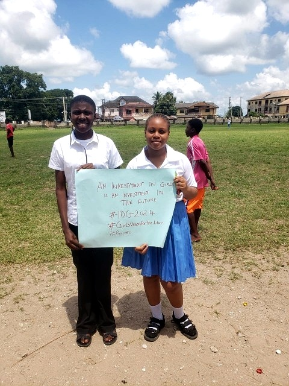
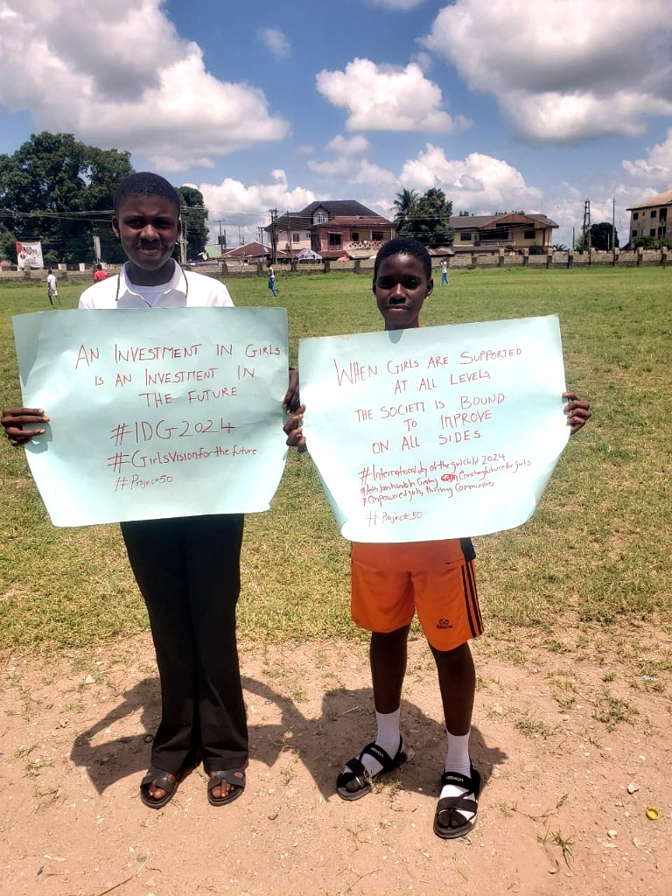
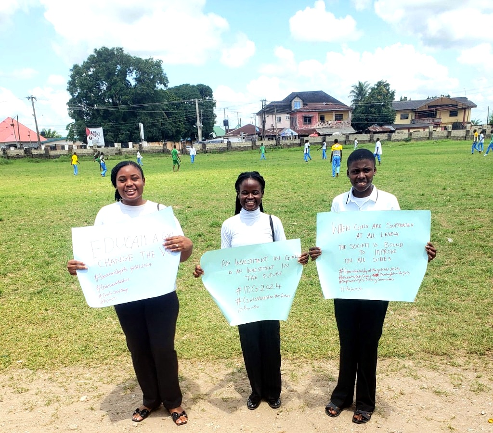
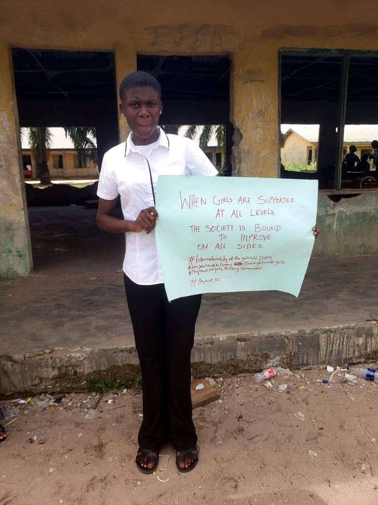
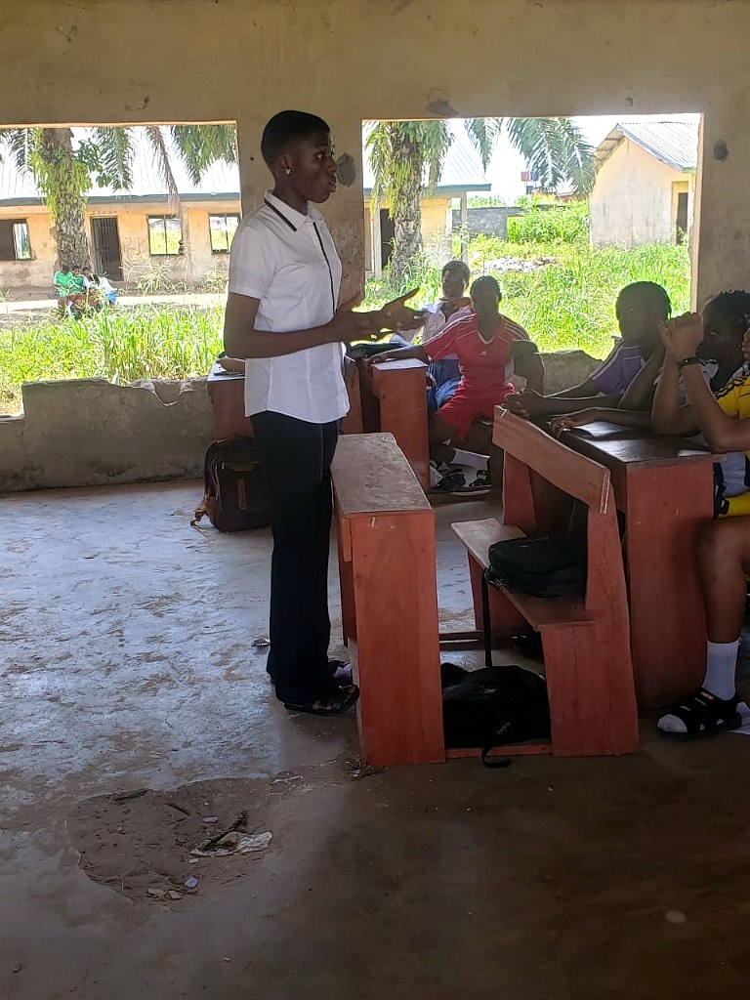
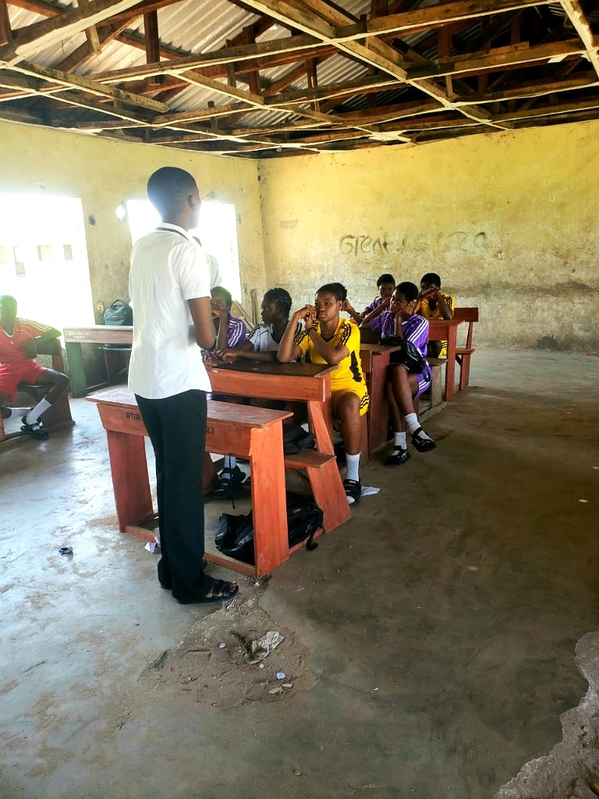
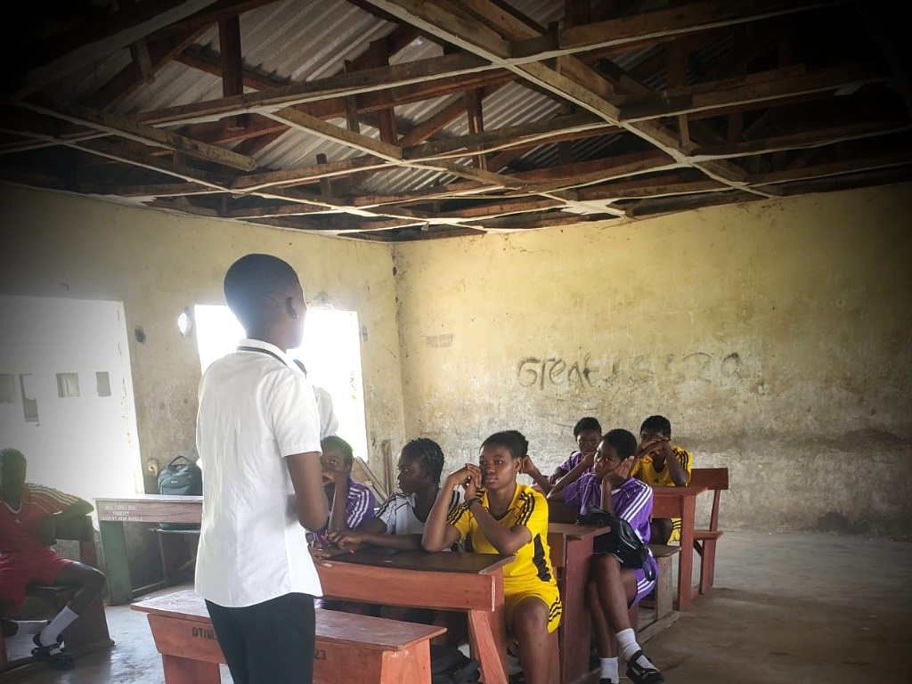
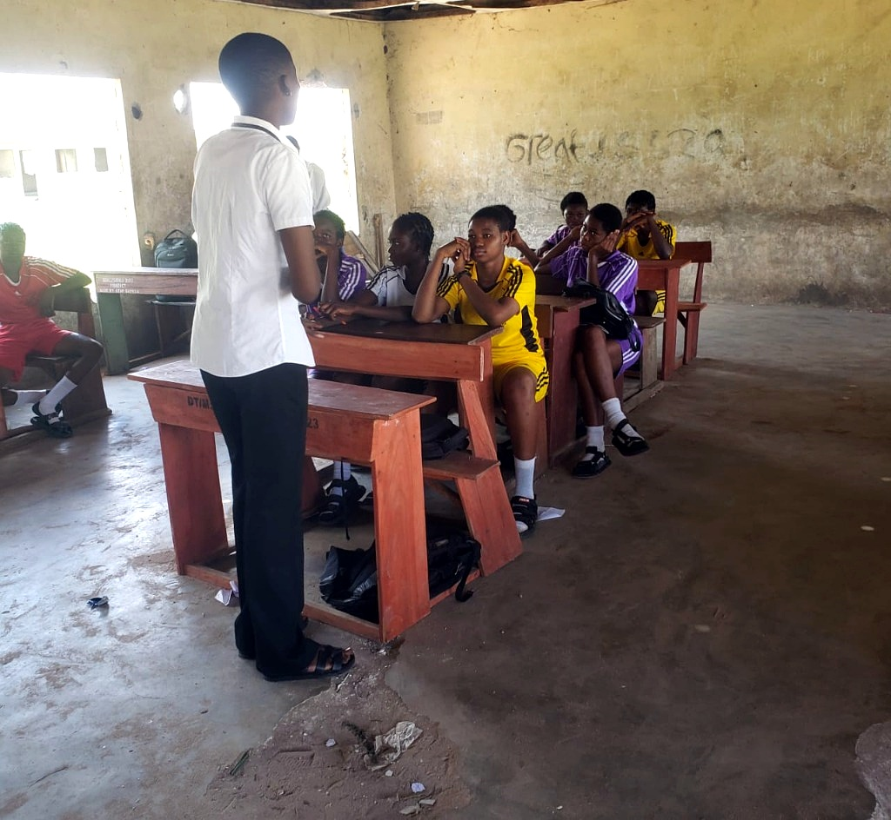
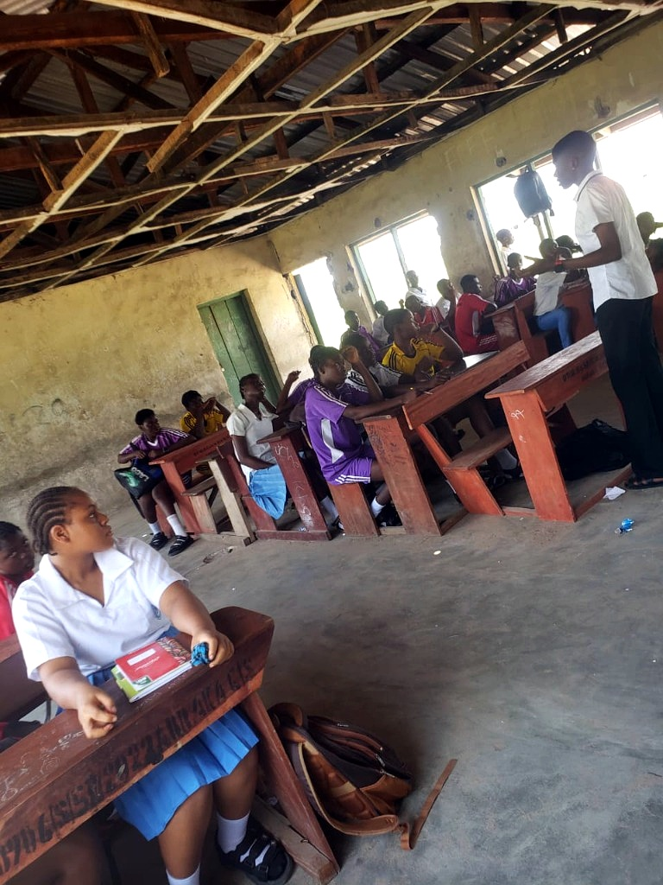

.JPG)
Blessing Ngozi Uzor
Master's Student, Mathematical Sciences (Data Science)
African Institute for Mathematical Sciences, Limbe, Cameroon
Master's Student, Mathematical Sciences (Data Science)
African Institute for Mathematical Sciences, Limbe, Cameroon
I am a Mathematician, Educationist and a current Mastercard Foundation Scholar pursuing graduate studies in Data Science at the African Institute for Mathematical Sciences (AIMS), Cameroon. My work sits at the intersection of applied mathematics, Artificial Intelligence, and education systems. I am particularly interested in using data-driven methods, machine learning, and mathematical/statistical modelling to address real-world challenges in education, public health and climate resilience across Africa. My long-term goal is to contribute to data-driven solutions that strengthen learning systems and improve outcomes for underserved communities.
African Institute for Mathematical Sciences, Limbe, Cameroon
Delta State University, Abraka, Nigeria
Delta State University, Nigeria
A case study of teachers' knowledge and student performance
Built a Transformer decoder from scratch, implementing self-attention, positional encoding, and masked multi-head attention, and created a custom dataset and training loop to demonstrate correct sequence mapping inference. Applied teacher forcing and cross-entropy loss with the Adam optimizer, visualizing attention patterns and training convergence to validate the model's learning process.
Developed a regression model to predict student performance using academic and lifestyle factors (study hours, sleep, extracurriculars), performing data cleaning, visualization, and correlation analysis to identify Previous Scores and Hours Studied as the strongest predictors. Trained a Multiple Linear Regression model, achieving 98.9% explained variance (R² = 0.989) and an RMSE of 2.04 on the test set, and derived actionable insights from model coefficients.
Conducted a full statistical inference analysis on the birthwt dataset to investigate factors influencing low birth weight, applying hypothesis testing and confidence intervals. Empirically validated the Central Limit Theorem through simulation (1000 samples, n=30) and performed F-test and Chi-square test of independence, identifying a significant association between smoking and low birth weight (p=0.0396).
Designed and implemented a recursive algorithm in Python to solve systems of simultaneous linear congruences using the Chinese Remainder Theorem (CRT). Engineered core functions from scratch: a recursive GCD calculator, an Extended Euclidean Algorithm (Bézout coefficients), and a pairwise coprimality checker. Developed a robust solver that recursively reduces n congruences to a single solution modulo the product of all moduli, handling edge cases gracefully.
Conducted an end-to-end data science project to predict mortality risk in heart failure patients using a clinical dataset of 299 patients and 13 variables. Performed exploratory data analysis (EDA) to identify key clinical risk factors and built classification models including Logistic Regression and Random Forest. Achieved an AUC of 0.895 with a Random Forest model, demonstrating strong performance (84.75% accuracy) on the test set. Delivered actionable clinical insights by interpreting feature importance.
Designed and deployed a secure, full-stack personal finance web application with Flask REST API backend and dynamic JavaScript/Tailwind CSS frontend. Engineered robust user authentication using Flask-JWT-Extended and implemented PostgreSQL database via SQLAlchemy ORM. Developed complete frontend logic with ES6+ JavaScript, handling form validation and JWT session management. Deployed full application stack on Render with production-grade integration.
Built a Logistic Regression classifier from the ground up (without scikit-learn) to distinguish between electron and hadron particles. Implemented the complete ML pipeline: data loading, binary label encoding, 80/20 train-test splitting, feature standardization, and matrix augmentation. Developed core algorithms including sigmoid activation, cross-entropy loss, and gradient computation using vectorized NumPy operations. Achieved ~88% accuracy and 90% recall on the test set.
Happiness the Great Tutorial, Abraka, Delta State
Boys Secondary School, Obiaruku, Delta State
Amazing Grace International School, Abraka, Delta State
Delta State University, Abraka, Delta State
Provided academic support to fellow undergraduate students in Mathematics (Calculus, Trigonometry and Algebra) as well as Education courses. Conducted peer tutoring sessions, fostering collaborative learning among students.
Non-profit organization aiding flood-affected communities
Collaborated with the Education Students Association in Benin City, Nigeria, to raise awareness on the dangers of school dropouts and possible ways to reduce dropout rates.
Fully funded merit-based scholarship, African Institute for Mathematical Sciences
Education Bursary Award | Federal Government of Nigeria undergraduate scholarship
National Association of Science Education Students
Appeared four times for obtaining a GPA above 4.0
Awarded $500 USD for academic excellence until graduation
Competitive merit scholarship awarded for outstanding performance in a comprehensive aptitude test
Delta State Government scholarship recipient
Educational bursary award
Educate Them All (ETA) Network is my initiative dedicated to making education accessible to underprivileged students. Through mentorship, academic support, and community outreach, we work to keep students in school and help them achieve their educational goals.
Remember feeling lost when everyone talked about Python? I've been there! When I started my Master's in Mathematical Sciences, programming felt impossible. I thought Python was literally just a snake, and coding seemed like something only "tech geniuses" could do.
But here's what I discovered: Python isn't just for computer science students. It became my secret weapon in Data Science — helping me analyze datasets, build predictive models, and excel in my studies. If a science student like me could master it, so can you!
I built this free guide specifically to help:
What makes this different? I designed it based on the struggles I faced — with clear explanations, practical examples, and a step-by-step approach that anyone can follow. No jargon, no assumptions, just straightforward learning.
Start your Python journey today! Track your progress as you go from complete beginner to building real projects. The guide is 100% free and built to help you succeed.
Begin Your Python Journey Now








Research and teaching, public speaking, advocating for SDGs, sports, listening to music, volunteering, and learning about new cultures and languages.
For fun, I write stories, facts and fictions on READAFRICA. Find some of my work:
Since you've made it to the bottom, here are some bonus treasures!
Music that moves my soul
Click to listenWisdom from Yoruba, Igbo, African proverbs & life
Click to discover